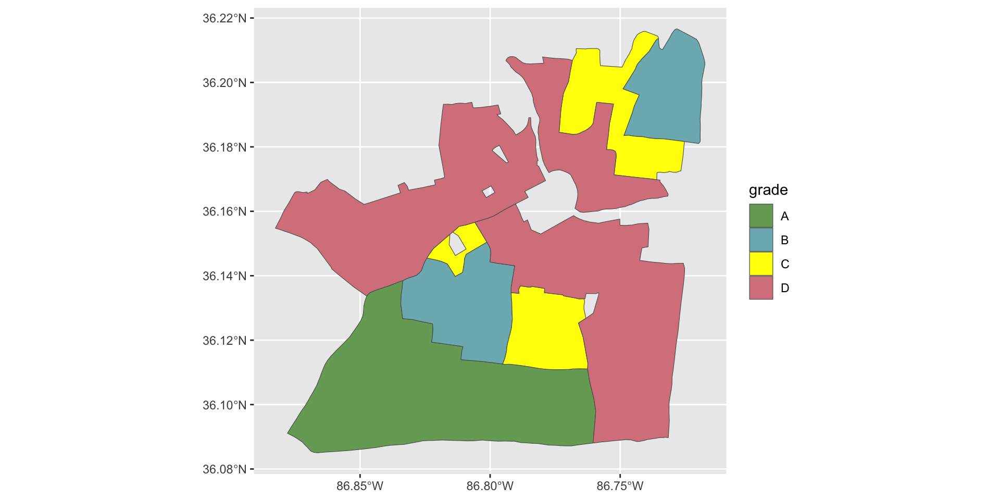
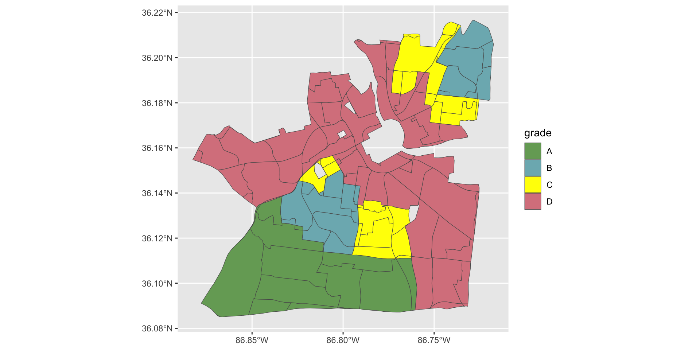

[Assess] Group Projects
2025-11-21
Overview
- Centering Activity
- Spatial data in R (mini-lecture)
- Paired Work
- Few Logistics
Centering Activity
- Write something you’re most proud of this semester on the white board
- Can be non-academic, in fact I suggest it!
- Take a few minutes to read how far we’ve come!
Spatial Data in R
- Spatial Operations
- Working with Redlining Data
Loading Packages + Data
- Load sf, tidyverse, mapview, tigris, and wesanderson packages
- Dataset from NYC Open Data Portal on Rat Inspections
- Neighborhood Tabulation Areas Dataset (NTAs) from NYC Open Data Portal
Quick look at our data
- Here’s all of the Rat Activity Sightings since my friends moved into Brooklyn (08/01/2025).
Spatial Operations
- Sometimes, we want to select data based on its spatial attributes, rather than numeric/character attributes.
- Spatial operations are lovely for this reason!
Simple feature collection with 5169 features and 5 fields
Geometry type: POINT
Dimension: XY
Bounding box: xmin: -74.03695 ymin: 40.5721 xmax: -73.85655 ymax: 40.73692
Geodetic CRS: WGS 84
# A tibble: 5,169 × 6
jb_____ inspctn_t inspctn_d jb_prgr result geometry
<dbl> <chr> <chr> <dbl> <chr> <POINT [°]>
1 14137326 Initial 08/01/2025 08:1… 1 Rat A… (-73.9383 40.68687)
2 14137670 Initial 08/01/2025 08:5… 1 Rat A… (-73.92992 40.70549)
3 14137481 Compliance 08/01/2025 09:0… 4 Rat A… (-73.94362 40.68193)
4 14137661 Compliance 08/01/2025 09:0… 2 Rat A… (-73.94177 40.70747)
5 14137115 Initial 08/01/2025 09:1… 1 Rat A… (-73.94126 40.6991)
6 14137116 Initial 08/01/2025 09:1… 1 Rat A… (-73.94124 40.69902)
7 14137484 Initial 08/01/2025 09:2… 1 Rat A… (-73.94307 40.68184)
8 14137747 Initial 08/01/2025 09:2… 1 Rat A… (-73.96871 40.64889)
9 14137485 Compliance 08/01/2025 09:2… 14 Rat A… (-73.9429 40.68186)
10 14137662 Compliance 08/01/2025 09:3… 2 Rat A… (-73.94399 40.70872)
# ℹ 5,159 more rowsSpatial Subsetting
- Perhaps we’re interested in selecting only the activity in their neighborhood?
- Spatial Subsetting allows you to select
My Friends’ Rats

Working with Redlining Data
- Downloaded spatial data as a GEOJson file for Nashville, TN from the Mapping Inequality website.
- geoJSON is a text-based spatial files that is easy to use and lightweight.
- We can also use the
rm()function to remove objects in our environment we no longer need.
Nashville HOLC map
Crosswalked Census Tracts
- There’s also data available from the mapping inequality project that “crosswalks” the original shapefile to census 2010 and 2020 census tracts.
- This is useful because you can much more easily join your CT data and visualize both sociodemographics and historic disinvestment.
HOLC CTs
Adding a Continuous EJ Variable
Preparing data for Mapping
- I was inspired by this NYTimes Data piece
Map!

Paired Work
Few Logistics
- HEET joining us on Tuesday!
- One reading and one video to watch (pay attention to assigned chapters)
- Class will be hybrid, use link on Week 13 to join!
- Reyna + Clara to prepare questions, Simmie to send thank you email.
- Office Hours Wednesday, October 26, 2025 will be virtual